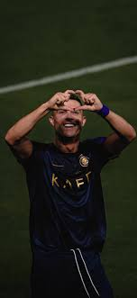

cristiano ronaldo
كريستيانو رونالدو جزء من أسطورة ريال مدريد وسيبقى دائماً أحد أكبر رموزه التاريخية. تم تقديمه رسمياً في السانتياغو برنابيو في 6 يوليو 2009، برفقة أوزيبيو وألفريدو دي ستيفانو، ولم يتوقف منذ تلك اللحظة عن تسجيل الأهداف: 451 هدفاً في 438 مباراة رسمية مع ريال مدريد (بأكثر من هدفٍ واحد في المباراة الواحدة)
الهداف التاريخي لكورة القدم
افضل لاعب في دوري الابطال140 هدف
(by ahmed abo mostafa)
هدف رونالدو التاريخي على اسبانيا
